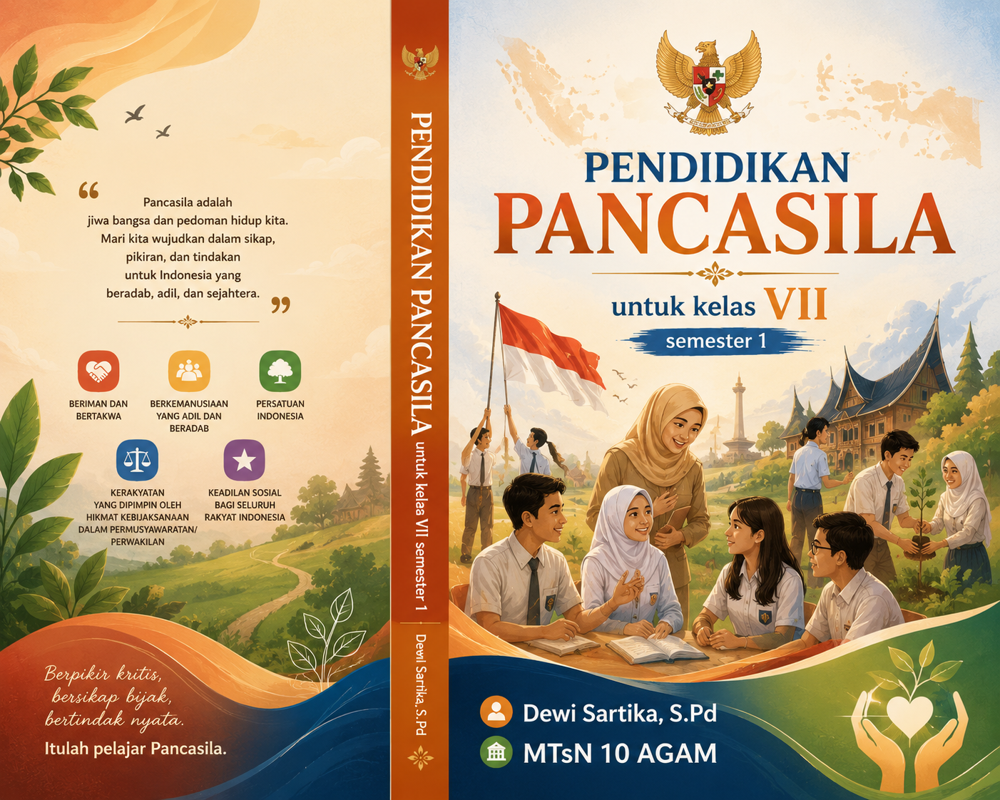

Buku Ajar Resmi
Panduan komprehensif memahami nilai-nilai luhur bangsa, dari latar belakang historis hingga implementasi modern dalam kehidupan bermasyarakat dan bernegara.
Penulis & Pendidik
Berdedikasi dalam menanamkan nilai-nilai Pancasila kepada generasi muda di MTsN 10 Agam. Buku ini disusun sebagai panduan pembelajaran yang sistematis, mendalam, dan relevan dengan perkembangan zaman, tanpa meninggalkan akar budaya dan sejarah bangsa.
mydheby@gmail.comKurikulum terstruktur dalam 14 sesi pembelajaran, dirancang untuk membangun pemahaman yang holistik tentang Pancasila dan kewarganegaraan.
Zaman Kerajaan, Penjajahan, dan Kebangkitan Nasional.
Pertemuan 02Pembentukan BPUPK, Sidang Pertama, Pidato Soekarno 1 Juni 1945.
Pertemuan 03Piagam Jakarta sebagai kompromi luhur pendiri bangsa.
Pertemuan 04Peran krusial PPKI dalam mengesahkan Pancasila.
Norma dalam Kehidupan Bermasyarakat.
Pertemuan 06Keseimbangan hak dan kewajiban dalam negara hukum.
Pertemuan 07 (UTS)Evaluasi komprehensif Bab 1 dan awal Bab 2.
Pertemuan 08Kedudukan UUD sebagai hukum tertulis tertinggi.
Pertemuan 09Proses historis penyusunan konstitusi pertama.
Pertemuan 10Dinamika ketatanegaraan pasca reformasi.
Memahami batas dan kedaulatan wilayah Indonesia.
Pertemuan 12Prinsip negara kesatuan dalam konteks modern.
Pertemuan 13Strategi menjaga keutuhan di tengah keberagaman.
Pertemuan 14 (UAS)Evaluasi akhir komprehensif seluruh materi.